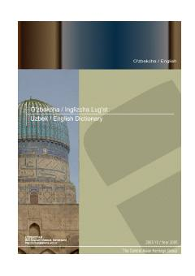

UEO'zbekcha-inglizcha keng qamrovli izohli lug'at.
Ushbu kitob o'zbek va ingliz tillarini o'rganuvchilar uchun mo'ljallangan keng qamrovli izohli lug'at bo'lib, so'zlarning ma'nolari va qo'llanilishini batafsil tushuntiradi. William Dirks tomonidan tuzilgan ushbu qo'llanma tilshunoslar, tarjimonlar va keng kitobxonlar ommasiga mo'ljallangan.